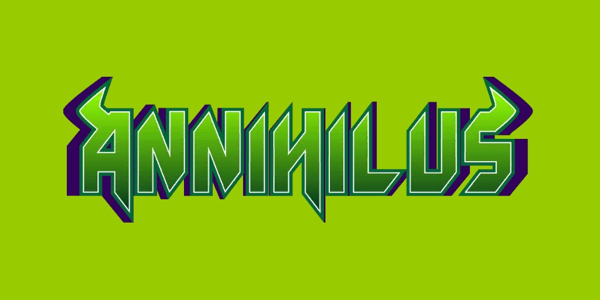
Annihilus (Terre-616)

Origines :
Dans un lointain passé, des habitants de la planète Tyanna, au cœur de la Zone négative, partirent semer sur des planètes voisines, des spores fécondées artificiellement.
Un de ces vaisseaux, à la suite d'une collision avec un météore, alla s'écraser sur la planète Arthros, un monde volcanique inhabité et son équipage libéra en une seule fois toutes les spores du vaisseau.
L'une de celles qui évoluèrent devint une créature insectoïde, de faible constitution mais douée d'une grande intelligence, qui deviendrait Annihilus.
Ce dernier découvrit le vaisseau des Tyanniens et, parmi l'équipement, un casque de transmission des connaissances, grâce auquel il assimila le savoir des Tyanniens.
Il utilisa ses pouvoirs nouvellement acquis pour asservir les formes de vie plus simples d'Arthros et transforma beaucoup de ses prisonniers en serviteurs qu'il nomma les « Scavengers », utilisant le Transmutateur de gènes conçu par les Tyanniens.
Il utilisa également les ressources du vaisseau pour créer sa Capsule de contrôle cosmique, ainsi qu'un exosquelette l'aidant à compenser sa faiblesse corporelle.
Par la suite, il commença à envisager de conquérir ou détruire les mondes environnants de la Zone négative.
Fort de ces nouvelles armes et de sa très grande intelligence, il partit à la conquête de la Zone négative.
Il s'opposa notamment aux Quatre Fantastiques et aux Avengers.
À la tête d'une armée gigantesque, la Vague d'annihilation, Annihilus progressa à travers la Galaxie, allié avec Thanos qui lui permit de voler le pouvoir de Galactus.
Il tua Quasar, détruisit le Nova Corps et le reliquat de l'empire Skrull.
Il fut toutefois vaincu et tué par le dernier centurion Xandarien, Nova.
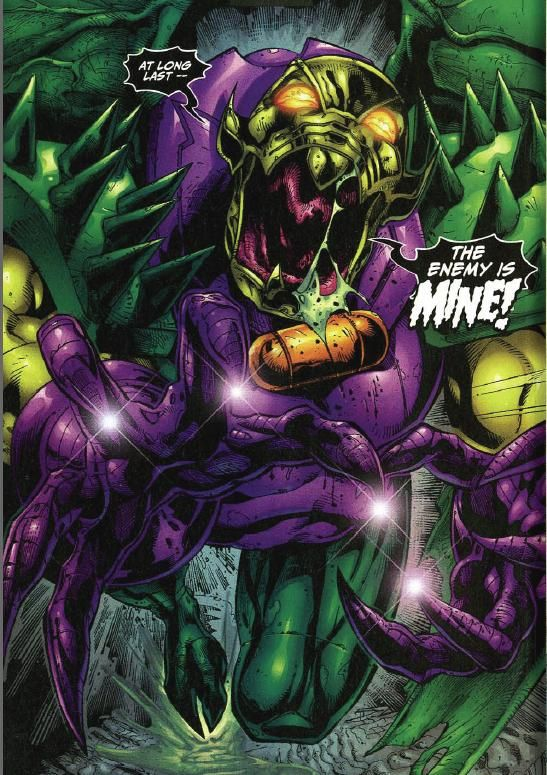
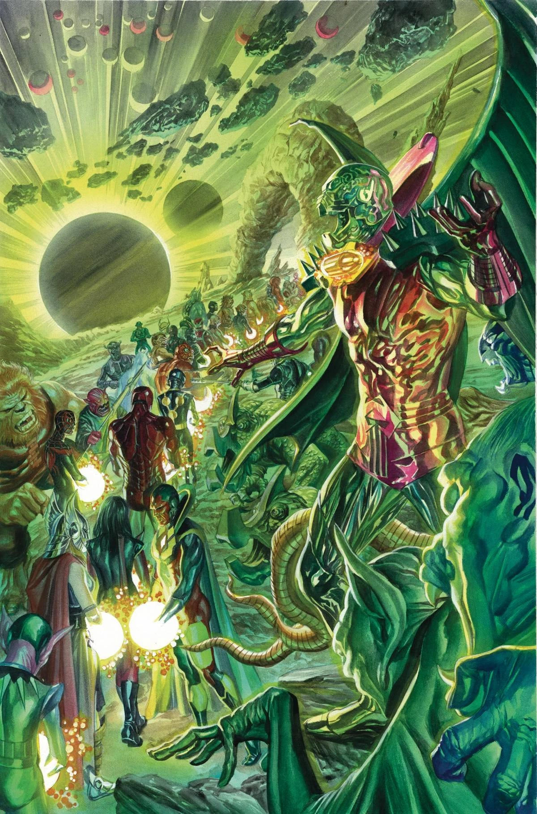

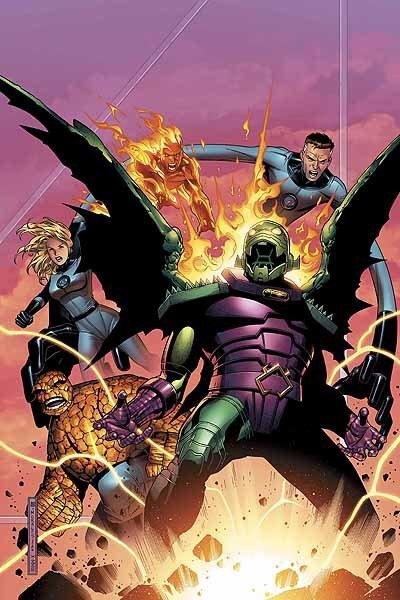

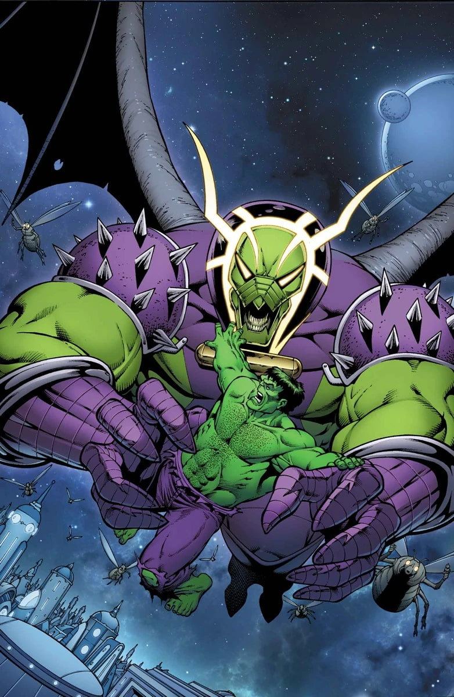
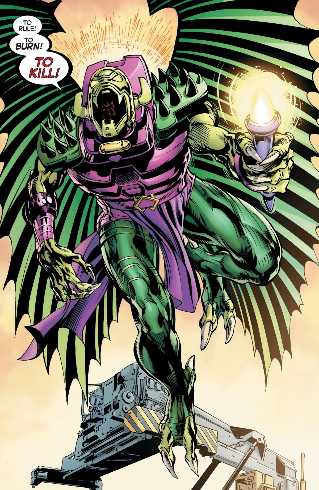
Capacités :
Annihilus possède un exosquelette très sophistiqué qui lui procure une force et une résistance surhumaine.
Il peut survivre dans le vide spatial pendant un an grâce à un système performant intégré à son exosquelette qui convertit et stocke l'énergie ainsi que l'oxygène.
Son arme principale est sa Capsule de contrôle cosmique, un petit cylindre fixé à son cou contenant l'essence de la technologie du vaisseau Tyrannien qu'il rencontra à sa naissance.
Il peut contrôler et manipuler l'énergie cosmique sous forme de rafales d'énergies destructrices ou transformer la structure atomique de la matière.
Lorsqu'il est tué, son corps libère des clones larvaires de lui-même, disposant de sa mémoire, le ce qui le rend virtuellement immortel.
Il possède des ailes qui lui permettent de voler dans l'atmosphère à une vitesse de 240 km/h.


Apparence :
Annihilus est un insectoïde avec une apparence de robot, à la peau verte.
Il possède une sorte d'armure violette et sa Capsule de contrôle cosmique est constamment accrochée à son cou (la source de ses pouvoirs).
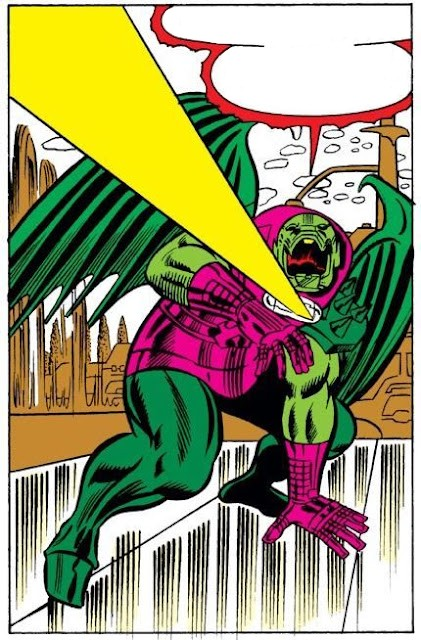
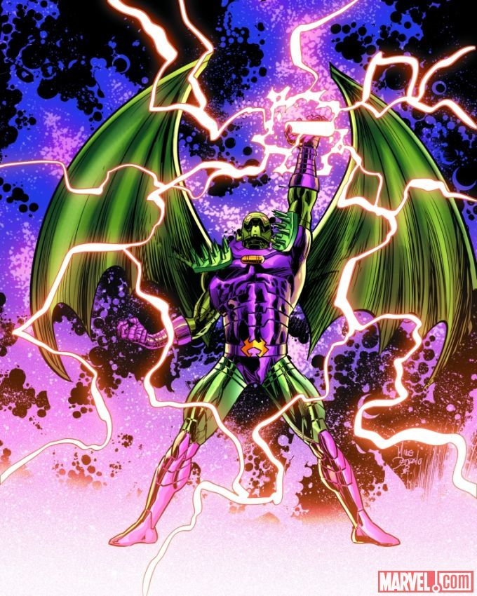

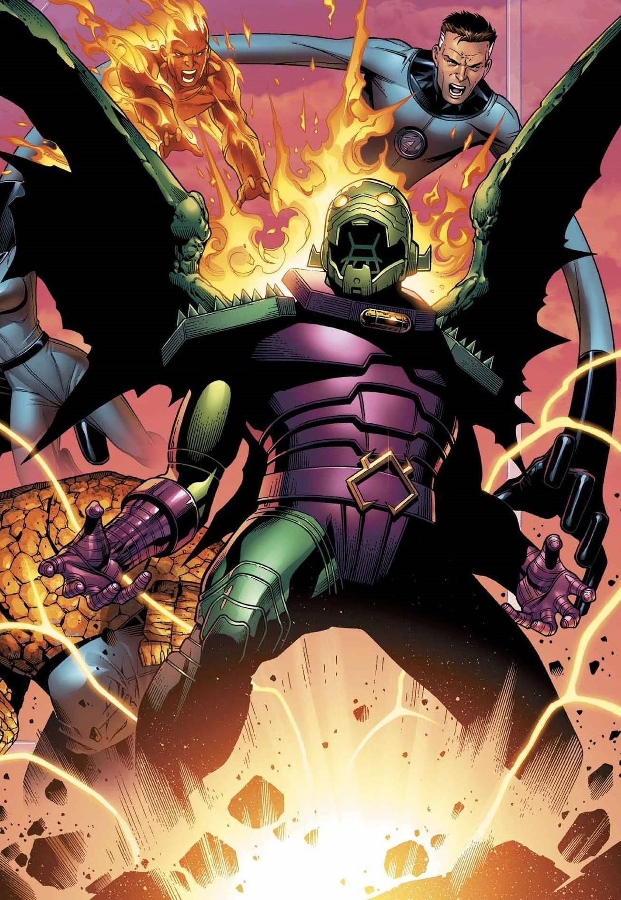
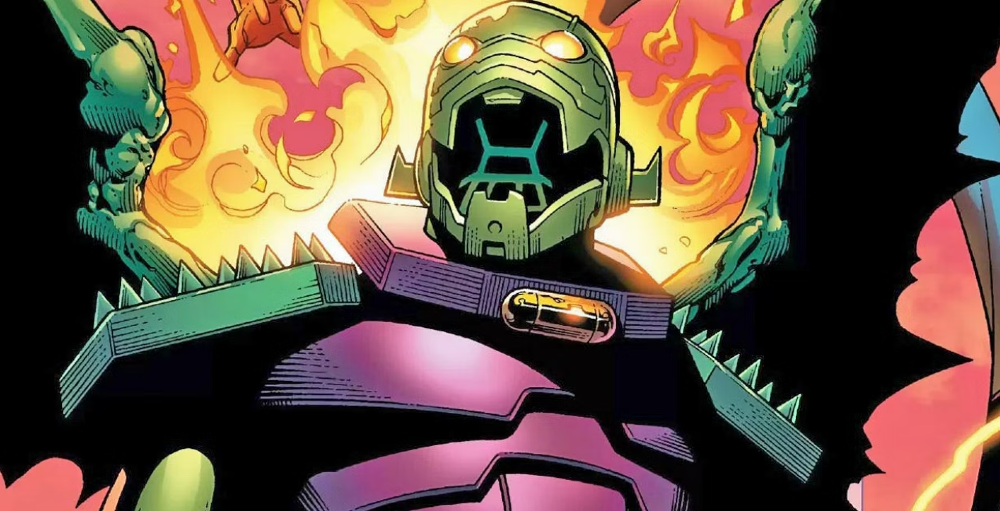
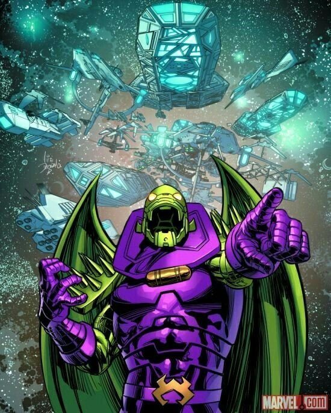
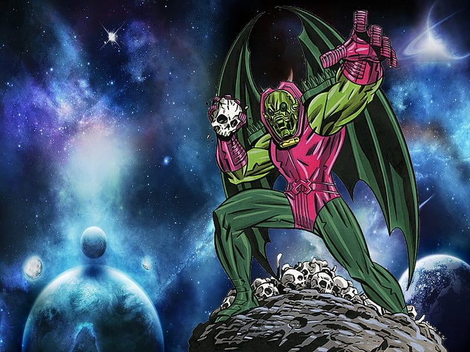
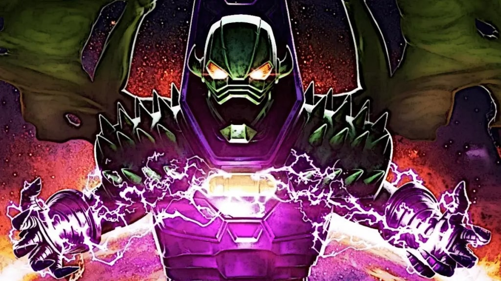